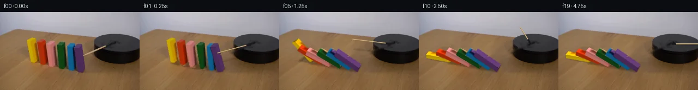

![首帧]()

Round 00
2026-11-04T22:45:14.846682+00:00像素候选变化代码 +287/−0inspection 更新
pixels 66f478dedeefeb92 · code 126afa6f3219501a
查看本轮 generate.py 真实 diff
--- previous/generate.py
+++ current/generate.py
@@ -0,0 +1,287 @@
+"""Image-based cuboid animation using local pixel operations only."""
+from pathlib import Path
+import math
+import cv2
+import numpy as np
+from PIL import Image, ImageDraw, ImageFilter
+import artifact_io
+
+ROOT = Path(__file__).resolve().parent
+S = 4
+W,H = 256,144
+SRC = np.asarray(Image.open(ROOT/'first_frame.png').convert('RGB'))
+
+# Measured image-space corners: front-left, front-right, back-right, back-left.
+# Slightly nonparallel edges preserve the source's perspective.
+SPECS = [
+ dict(name='yellow', bottom=[[57,93],[64,93],[69,88],[62,87]], top=[[49,52],[58,55],[65,49],[58,47]], color=[205,175,4], height=43, end=89.5),
+ dict(name='orange', bottom=[[75,97],[83,98],[88,91],[80,91]], top=[[67,56],[77,58],[83,52],[76,50]], color=[170,43,11], height=43, end=76.5),
+ dict(name='pink', bottom=[[92,102],[102,102],[106,95],[97,95]], top=[[85,59],[96,61],[101,54],[92,52]], color=[184,111,115], height=44, end=69.5),
+ dict(name='green', bottom=[[111,105],[120,106],[125,98],[116,98]], top=[[104,61],[115,63],[120,57],[111,55]], color=[19,76,36], height=44, end=65.5),
+ dict(name='blue', bottom=[[128,108],[137,109],[143,101],[134,100]], top=[[122,63],[133,65],[138,58],[129,57]], color=[15,99,142], height=45, end=62.5),
+ dict(name='purple', bottom=[[143,111],[152,111],[156,104],[147,104]], top=[[135,66],[146,66],[150,59],[140,59]], color=[80,50,102], height=45, end=60.5),
+]
+for i,s in enumerate(SPECS):
+ s['bottom'] = np.array(s['bottom'], np.float32)
+ s['top'] = np.array(s['top'], np.float32)
+ s['start'] = .10 + (5-i)*.17
+
+# Masks include the source's antialiased outline. Farther shadow cleanup is separate.
+def poly_mask(poly, scale=1):
+ m = np.zeros((H*scale,W*scale),np.uint8)
+ cv2.fillConvexPoly(m,np.rint(np.array(poly)*scale).astype(np.int32),255)
+ return m
+
+blockmask = np.zeros((H,W),np.uint8)
+for s in SPECS:
+ s['hull'] = cv2.convexHull(np.vstack([s['bottom'],s['top']])).reshape(-1,2)
+ blockmask = cv2.bitwise_or(blockmask,poly_mask(s['hull']))
+shaftmask = np.zeros_like(blockmask)
+cv2.line(shaftmask,(151,81),(197,62),255,4,cv2.LINE_AA)
+removal = cv2.dilate(blockmask,cv2.getStructuringElement(cv2.MORPH_ELLIPSE,(9,9)))
+# Original shadows on the table extend to the right of each block.
+for s in SPECS:
+ b=s['bottom'];p=np.vstack([b,b+np.array([10,4])])
+ cv2.fillConvexPoly(removal,cv2.convexHull(p.astype(np.float32)).astype(np.int32),255)
+removal=cv2.bitwise_or(removal,shaftmask)
+clean = cv2.inpaint(SRC,removal,5,cv2.INPAINT_TELEA).astype(np.float32)
+# Local source table grain, separated from lighting, fills the larger exposed area.
+yy,xx=np.mgrid[:H,:W]
+valid=(yy > 48) & (yy < 142)
+valid &= ~((xx > 166) & (yy < 102))
+valid &= cv2.dilate(removal,np.ones((5,5),np.uint8))==0
+srcf=SRC.astype(np.float32)
+woodband=srcf-cv2.GaussianBlur(srcf,(0,0),7)
+acc=np.zeros_like(srcf);weights=np.zeros((H,W),np.float32)
+shifts=[(105,45),(-90,35),(-115,20),(80,55),(-60,50),(45,70),(-20,70)]
+for j,(dx,dy) in enumerate(shifts):
+ sx=xx+dx;sy=yy+dy
+ inside=(sx>=0)&(sx<W)&(sy>=0)&(sy<H)
+ sx=np.clip(sx,0,W-1);sy=np.clip(sy,0,H-1)
+ ok=inside & valid[sy,sx]
+ # First suitable translated source patch dominates, with soft overlap boundaries.
+ w=cv2.GaussianBlur(ok.astype(np.float32),(0,0),1.8)*ok
+ w*=np.exp(-j*.8)
+ if j==0: w*=1/(1+np.exp((xx-97)/5))
+ if j==1: w*=1/(1+np.exp((97-xx)/5))
+ acc+=woodband[sy,sx]*w[...,None];weights+=w
+tex=acc/np.maximum(weights[...,None],1e-6)
+alpha=(removal/255.)[...,None]
+# Do not put wood grain onto the platform where the old shaft was removed.
+wood_region=(xx<171)|(yy>100)
+clean += tex*alpha*wood_region[...,None]*.90
+clean=np.uint8(np.clip(clean,0,255))
+Image.fromarray(clean).save(ROOT/'.tmp/clean_plate.png')
+
+# Supersampled canvas and source faces. Homographies are purely 2D pixel warps.
+source_hi=cv2.resize(SRC,(W*S,H*S),interpolation=cv2.INTER_CUBIC)
+plate_hi=cv2.resize(clean,(W*S,H*S),interpolation=cv2.INTER_CUBIC)
+
+
+def area(q):
+ return float(np.sum(q[:,0]*np.roll(q[:,1],-1)-q[:,1]*np.roll(q[:,0],-1))*.5)
+
+
+def vertices(s,deg):
+ b=s['bottom'];top=s['top'];a=math.radians(deg);c=math.cos(a);z=math.sin(a)
+ xf=np.array([1.,.18]);h=s['height']
… diff truncated; 200 more lines …